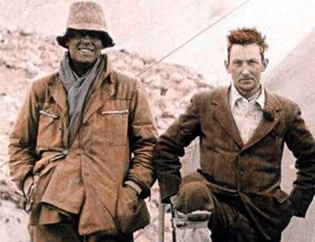
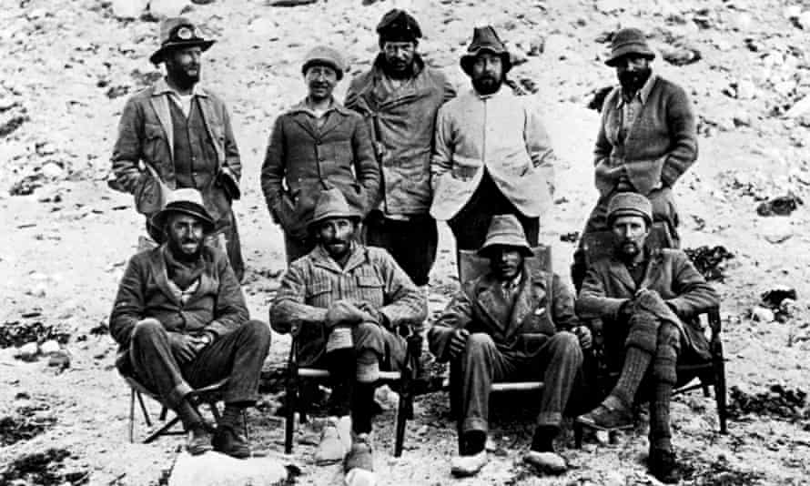

Everest
-
Declared the highest peak
1852
Someone realized it was a really tall mountain and said, "hey, this is a really tall mountain" and they used science to prove it.
-
First attempt at summiting
1922
A british team with George Mallory attempt to climb the mountain.
 -
George Mallory and Andrew Irvine disappear
1922
It's unknown if they reached the top before they died.
-
First summit (offically) occurs
1953
Either Edmund Hillary or Tenzing Norgay summited the mountain first.
 -
First woman summits
1975
Junko Tabei from Japan summits Everest